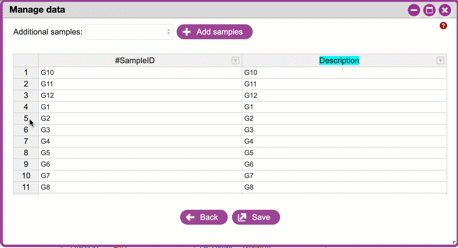
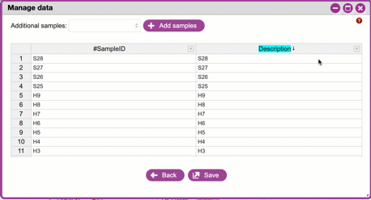
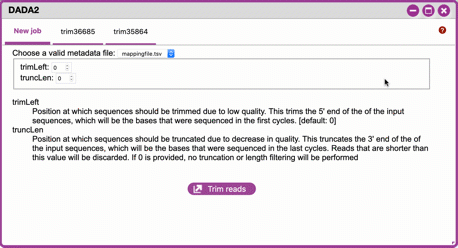
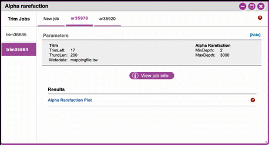

Walkthrough of DNA Subway Purple Line (beta testing documentation)¶
BETA RELEASE
The Purple line is in beta release. Please send feedback to DNALC Admin.
The Purple Line provides the capability for analysis of microbiome and eDNA (environmental DNA) by implementing a simplified version of the QIIME 2 (pronounced "chime two") workflow. Using the Purple Line, you can analyze uploaded high throughput sequencing reads to identify species in microbial or environmental DNA samples.
Metabarcoding uses high-throughput sequencing to analyze hundreds of thousands of DNA barcodes from complex mixtures of DNA. In a typical experiment, DNA is isolated from sterile swabs or material taken from different environmental locations or conditions. PCR is used to amplify a variable region, such as COI, or 12S or 16S ribosomal RNA genes, and sequence reads identify the variety and abundance of species from different samples. The analysis requires specialized software, such as QIIME 2.
The Purple Line integrates sequence data and metadata imported from CyVerse's Data Store, demultiplexing of samples, quality control, and taxonomic identification and quantitation. Once sequences are analyzed, the results can be visualized to allow comparisons between samples and different conditions summarized in the metadata.
Some things to remember about the platform
- You must be a registered CyVerse user to use Purple Line (register for a CyVerse account at user.cyverse.org).
- The Purple line was designed to make microbiome/eDNA data analysis "simple". However, we ask that users very carefully and thoughtfully decide what "jobs" they want to submit.
- A single Purple Line project may take hours to process since HPC computing is subject to queues which may support hundreds of other jobs. These systems also undergo regular maintenance and are subject to periodic disruption.
- DNA Subway implements the QIIME 2 software. This software is in continual development. Our version may not be the most current, and our documentation and explanation is not meant to replace the full QIIME 2 documentation.
- We have made design decisions to create a straightforward classroom-friendly workflow. While this Subway Line does not have all possible features of QIIME 2, we purpose to cover important concepts behind microbiome and eDNA analysis.
Sample Data: How to use provided sample data
In this guide, we will use a microbiome dataset ("ubiome-test-data") collected from various water sources in Montana (down-sampled and de-identified).Where appropriate, a note (in this orange colored background) in the instructions will indicate which options to select to make use of this provided dataset.
DNA Subway Purple Line - Metadata file and Sequencing Prerequisites¶
If you are generating data for a project (i.e. sequencing samples), you will need to provide the sequencing data (fastq files) as well as a metadata file that describes the data contained in these sequencing files. This metadata must conform to strict guidelines, or analyses will fail. QIIME 2 metadata is stored in a TSV (tab-separated values) file. These files typically have a .tsv or .txt file extension, though it doesn't matter to QIIME 2 what file extension is used. TSV files are simple text files used to store tabular data, and the format is supported by many types of software, such as editing, importing, and exporting from spreadsheet programs and databases. Thus, it's usually straightforward to manipulate QIIME 2 metadata using the software of your choosing. If in doubt, we recommend using a spreadsheet program such as Microsoft Excel or Google Sheets to edit and export your metadata files.
Handling Project Metadata
Before you create your project, you will have generated metadata (as described above) for your project. You have two options for preparing this metadata to ensure that it conforms to the required QIIME2 parameters. The file must be validated (which you can do on your own or using Subway). If there are errors in your file (this is common), they must be fixed.
Formatting Your Metadata
Leading and trailing whitespace characters
If any cell in the metadata contains leading or trailing whitespace characters (e.g. spaces, tabs), those characters will be ignored when the file is loaded. Thus, leading and trailing whitespace characters are not significant, so cells containing the values 'gut' and ' gut' are equivalent. This rule is applied before any other rules described below
ID column
The first column MUST be the ID column name (i.e. ID header) and the first line of this column should be #SampleID or one of a few alternative. - Case-insensitive: id; sampleid; sample id; sample-id; featureid; feature id; feature-id. - Case-sensitive: #SampleID; #Sample ID; #OTUID; #OTU ID; sample_name
Sample IDs
For the sample IDs, there are some simple rules to comply with QIIME 2 requirements:
- IDs may consist of any Unicode characters, with the exception that IDs must not start with the pound sign (#), as those rows would be interpreted as comments and ignored. IDs cannot be empty (i.e. they must consist of at least one character).
- IDs must be unique (exact string matching is performed to detect duplicates).
- At least one ID must be present in the file.
- IDs cannot use any of the reserved ID column names (the sample ID names, above).
- The ID column can optionally be followed by additional columns defining metadata associated with each sample or feature ID. Metadata files are not required to have additional metadata columns, so a file containing only an ID column is a valid QIIME 2 metadata file.
Column names
- May consist of any Unicode characters.
- Cannot be empty (i.e. column names must consist of at least one character).
- Must be unique (exact string matching is performed to detect duplicates).
- Column names cannot use any of the reserved ID column names.
Column values
- May consist of any Unicode characters.
- Empty cells represent missing data. Note that cells consisting solely of whitespace characters are also interpreted as missing data.
QIIME 2 currently supports categorical and numeric metadata columns. By default, QIIME 2 will attempt to infer the type of each metadata column: if the column consists only of numbers or missing data, the column is inferred to be numeric. Otherwise, if the column contains any non-numeric values, the column is inferred to be categorical. Missing data (i.e. empty cells) are supported in categorical columns as well as numeric columns. For more details, and for how to define the nature of the data when needed, see the QIIME 2 metadata documentation.
Working with an existing metadata file
Tip
If you have your own metadata file, it will still need to be validated once uploaded to DNA Subway.
Using a spreadsheet editor, create a metadata sheet that provides descriptions of the sequencing files used in your experiment. Export this file as a tab-delimited .txt or .tsv file. following the QIIME 2 metadata documentation](https://docs.qiime2.org/2019.10/tutorials/metadata/) recommendations. (Optional: if you using your own metadata file you can validate it using DNA Subway and or online QIIME2 validator Keemei).
Tip
See an example metadata file used for our sample data here: metadata file. Click the Download button on the
linked page to download and examine the file. (Note: This is an
Excel version of the metadata file, you must save Excel files as .TSV
(tab-separated) to be compatible with the QIIME 2 workflow.)
Creating a metadata file using DNA Subway
See DNA Subway Purple Line - Metadata and QC section C.
DNA Subway Purple Line - Create a Microbiome Analysis Project¶
A. Create a project in Subway
- Log-in to DNA Subway (unregistered users may NOT use Purple Line,
register for a CyVerse account at
). - Click the purple square ("Microbiome Analysis") to begin a project.
-
For 'Select Project Type' select either Single End Reads or Paired End Reads
Sample Data
"ubiome-test-data" dataset: Select Single End Reads
- For 'Select File Format' select the format the corresponds to your sequence metadata.
Sample Data
"ubiome-test-data" dataset: Select Illumina Casava 1.8
Tip
Typically, microbiome/eDNA will be in the form of multiplexed FastQ sequences. We support the following formats:
- Enter a project title, and description; click
Continue.
B. Upload read data to CyVerse Data Store
The sequence read files used in these experiments are too large to upload using the Subway interface. You must upload your files (either .fastq or .fastq.gz) directly to the CyVerse Data Store:
- Upload your
- FASTQ sequence reads;
- Sample metadata file (.tsv or .txt formatted according to QIIME 2 Metadata documentation) to the CyVerse Data Store using Cyberduck. See instructions: CyVerse Data Store Guide.
(Optional: You can edit and change metadata using the Subway interface in the [Manage data]step once the project is created.)
DNA Subway Purple Line - Metadata and QC¶
A. Select files using Manage Data
-
Click on the 'Manage data stop: this opens a window where you can add your FASTQ and metadata files. Click
+Add from CyVerseto add the FASTQ files uploaded to the CyVerse Data Store. Select your files and then clickAdd selected files{.interpreted-text role="guilabel"} orAdd all FASTQ files in this directory{.interpreted-text role="guilabel"} as appropriate.Sample Data
"ubiome-test-data" dataset: Navigate to: Shared Data > SEPA_microbiome_2016 > ubiome-test-data and click
Add all FASTQ files in this directory
2. To add your metadata file you may use one of three options: - Add from CyVerse: Add a metadata file you have uploaded to CyVerse Data store - Upload locally: Directly upload a metadata file from your local computer - Create New: Create a new metadata file using DNA Subway
Creating a metadata file using DNA Subway
You can create a metadata file using DNA Subway. Creating the file
step-by-step will help you to avoid metadata errors. Be sure you
have consulted the QIIME 2 documentation so you can anticipate what the required fields
are. To use this feature under in the 'Manage data' step under
'Metadata Files' click Create new
Sample IDs and adding/removing samples
These are unique IDs for each of your samples.
All metadata files must have a column called #SampleID. Click
+Add samples to add additional
rows. In the Subway form, these will be unique, arbitrary names
(roughly corresponding to well-positions on a 96-well microplate).
You can change these (including pasting in sample names from an
existing spreadsheet).
Right-clicking on a row number allows you to remove or insert rows.

Adding columns, managing sample descriptions and data types
The very last column must be a sample description. You can click the arrow on the right of this column to add a new column (which will be added to the left). Column names must be unique, must not be empty, cannot contain whitespace, can contain a maximum of 32 characters, cannot match a reserved column name. Notice that when you click on a column name it is colored -pink for columns that have numeric data (e.g. measurements) and cyan for everything else (e.g. categorical descriptions in the form of words (i.e. strings)). Clicking a column name will allow you to change its type.

Handling errors
If you violate one of the rules for metadata formatting, the entry will turn red. Consult the help and or the QIIME 2 documentation to correct the error.
Click Save to save your
metadata file, and close the window.
Sample Data
"ubiome-test-data" dataset:
Click Add from CyVerseNavigate to: Shared Data > SEPA_microbiome_2016 > ubiome-test-data
Select the mappingfile_MT_corrected.tsv and then click Add selected files.
3. As needed, you can edit or rename your metadata file. Before
proceeding, you must validate your metadata file. To validate,
click the "validate" link to the right of the metadata file you
wish to check. Once the validation completed, click Run to proceed. If you have
errors, you will be presented with an Edit button so that you can return to the file and
edit.
B. Demultiplex reads
At this step, reads will be grouped according to the sample metadata. This includes separating reads according to their index sequences if this was not done prior to running the Purple Line. For demultiplexing based on index sequences, the index sequences must be defined in the metadata file.
Note
Even if your files were previously demultimplexed (as will generally be the case with Illumina data) you must still complete this step to have your sequence read files appropriately associated with metadata.
1. Click the 'Demultiplex reads' and choose a number of reads to sample. When the job has completed click Demultiplexing Summary to view your results. In 'Random sequences to sample for QC', enter a value (1000 is recommended),
Sample Data
"ubiome-test-data" dataset: Use the default of 1000 sequences
2. When demultiplexing is complete, you will generate a file (.qzv) click this link to view a visualization and statistics on the sequence and metadata for this project.
Tip
Several jobs on Purple Line will take several minutes to an hour
to complete. Each time you launch one of these steps you will get
a Job ID. You can click the View job info{.interpreted-text
role="guilabel"} button to see a detailed status and
diagnostic/error messages. If needed There is a [stop this job]{.title-ref} link at the bottom of the info page to cancel a
job.
Note
QIIME2 Visualizations
One of the features of QIIME 2 are the variety of visualizations provided at several analysis steps. Although this guide will not cover every feature of every visualization, here are some important points to note.
QIIME2 View: DNA Subway uses the QIIME 2 View plugin to display visualizations. Like the standalone QIIME 2 software, you can navigate menus, and interact with several visualizations. Importantly, many files and visualizations can be directly download for your use outside of DNA Subway, including in report generation, or in your custom QIIME 2 analyses. You can view downloaded .qza or .qzv files at view.qiime2.org.
Quality Graphs Explained
After demultiplexing, you will be presented with a visualization that displays the following tables and graphs:
Overview Tab
- Demultiplexed sequence counts summary: For each of the
fastq files (each of which may generally correspond to a
single sample), you are presented with comparative
statistics on the number of sequences present. This is
followed by a histogram that plots number of sequences by
the number of samples.
- Per-sample sequence counts: These are the actual counts of sequences per sample as indicated by the sample names you provided in your metadata sheet.
Interactive Quality Plot
This is an interactive plot that gives you an average quality (y-axis) by the position along the read (x-axis). This box plot is derived from a random sampling of a subset of sequences. The number of sequences sampled will be indicated in the plot caption. You can use your mouse drag and zoom in to regions on the plot. Double-click your mouse to zoom out.
3. Click the "Interactive Quality Plot" tab to view a histogram of sequence quality. Use this plot at the tip below to determine a location to trim.
Tips on trimming for sequence quality
On the Interactive Quality Plot you are shown an histogram, plotting the average quality (x axis) Phred score vs. the position on the read (y axis) in base pairs for a subsample of reads.
Zooming to determine 3' trim location
Click and drag your mouse around a collection of base pair positions you wish to examine. Clicking on a given histogram bar will also generate a text report and metrics in the table below the chart. Using these metrics, you can choose a position to trim on the right side (e.g. 3' end of the sequence read). The 5' (left trim) is specific to your choice of primers and sequencing adaptors (e.g. the sum of the adaptor sequence you expect to be attached to the 5' end of the read). Poor quality metrics will generate a table colored in red, and those base positions will also be colored red in the histogram. Double-clicking will return the histogram to its original level of zoom.
Example plots It is important to maximize the length of the reads while minimizing the use of low quality base calls. To this end, a good guideline is to trim the right end of reads to a length where the 25th percentile is at a quality score of 25 or more. However, the length of trimming will depend on the quality of the sequence, so you may have to use a lower quality threshold to retain enough sequence for informative sequence searches and alignments. This may require multiple runs of the analysis to find the optimal trim length for your data.
Quality drops significantly at base 35

Improved quality sequence

C. Use DADA2 for Trimming and Error-correction of Reads
It is important to only work with high quality data. This step will generate a sequence quality histogram which can be used to determine parameter for trimming.
-
Click 'DADA2' and choose the metadata file corresponding to the samples you wish to analyze. Then choose values for trimming of the reads. For "trimLeft" (the position starting from the left you wish to trim) and "TruncLen" (this is the position where reads should be trimmed, truncating the 3' end of the read. Reads shorter than this length will be discarded). Finally, click
Trim reads.Sample Data
"ubiome-test-data" dataset: Based on the histogram for our sample, we recommend the following parameters:
- trimLeft: 17 (this is specific to primers and adaptors in this experiment)
- TruncLen: 200 (this is where low quality sequence begins, in this case because our sequence length is lower than the expected read length)
D. Check Results of Trimming Once trimming is complete, the following outputs are expected:
-
Click on DADA2 and then click on the links in the Results table to examine results.
-
Trim Table (Metric summary, Frequency per sample, Frequency per feature): Summarizes the dataset post-trimming including the number of samples and the number of features per sample. The "Interactive Sample Detail" tab contains a sampling depth tool that will be used in computation of the core matrix.
Note
You will use the maximum frequency value for the Alpha rarefaction step So you may wish to record this value now for the DNA Subway 'Clustering sequences' step.
-
Stats: Sequencing statistics for each of the sample IDs described in the original metadata file.
- Representative Sequences (Sequence Length Statistics, Seven-Number Summary of Sequence Lengths, Sequence Table): This table contains a listing of features observed in the sequence data, as well as the DNA sequence that defines a feature. Clicking on the DNA sequence will submit that sequence for BLAST at NCBI in a separate browser tab.
The feature table contains two columns output by DADA2. DADA2 (Divisive Amplicon Denoising Algorithm 2) determines what sequences are in the samples. DADA2 filters the sequences and identifies probable amplification or sequencing errors, filters out chimeric reads, and can pair forward and reverse reads to create the best representation of the sequences actually found in the samples and eliminating erroneous sequences.
- Feature ID: A unique identifier for sequences.
- Sequence: A DNA Sequence associated with each identifier.
Clicking on any given sequence will initiate at BLAST search on the NCBI website. Click "View report" on the BLAST search that opens in a new web browser tab to obtain your results. Keep in mind that if your sequences are short (due to read length or trimming) many BLAST searches may not return significant results.
Tip
Although the term "feature" can (unfortunately) have many meanings as used by the QIIME2 documentation, unless otherwise noted in this documentation it can be thought of as an OTU (Operational Taxonomic Unit); another substitution for the word species. OTU is a convenient and common terminology for referring to an unclassified or undetermined species. Ultimately, we are attempting to identify an organism from a sample of DNA which may not be informative enough to reach a definitive conclusion.
Tip
If you want to redo the DADA2 step with different parameters, click the "New Job" tab on the upper left of a DADA2 window to submit a new job. New jobs appear as tabs on Subway steps that are typically run several times. You can go back an see these jobs which are labeled with a job number.

DNA Subway Purple Line - Alpha Rarefaction/Clustering Sequences¶
A. Alpha rarefaction
At this step, you can visualize summaries of the data. A feature table will generate summary statistics, including how many sequences are associated with each sample.
- Click on 'Alpha rarefaction'. Select "run" and designate the
minimum and maximum rarefaction depth. A minimum value should be
set at 1. The maximum value is specific to your data set. The
maximum value is specific to your data set. To determine what the
maximum value should be set to, open the "Trim Table" from the
"DADA2" step. You may not choose a value that is greater than
the maximum frequency per sample. In general, choosing a value
that is somewhere around the median frequency seems to work well,
but you may want to increase that value if the lines in the
resulting rarefaction plot don't appear to be leveling out, or
decrease that value if you seem to be losing many of your samples
due to low total frequencies closer to the minimum sampling depth
than the maximum sampling depth. Identify the maximum Sequence
Count value and enter that number as the maximum value. Click
Submit Job.
Note
Since you may want to try Alpha rarefaction using different combinations of results from DADA2 trimming and your choice of rarefaction depths, your trim (DADA2) jobs are displayed on the left, and each new Alpha rarefaction setting will appear as a tab on the top.
Sample Data
"ubiome-test-data" dataset: We recommend the following parameters:
-
Min. rarefaction depth: 1
-
Max. rarefaction depth: 2938
- Under 'Results' click on Alpha Rarefaction Plot to view the results.
Navigating Alpha Rarefaction graphs
Alpha rarefaction generates an interactive plot of species diversity by sampling depth by the categorical samplings described in your sample metadata. You can use dropdown menus to change metrics/conditions displayed and also export data as a CSV file.

DNA Subway Purple Line - Calculate Core Metrics/Alpha and Beta Diversity¶
At this stop, you will examine Alpha Diversity (the diversity of species/taxa present within a single sample) and Beta Diversity (a comparison of species/taxa diversity between two or more samples).
- Alpha diversity answers the question - "How many species are in a sample?"
- Beta diversity answer the question - "What are the differences in species between samples?"
A. Calculate core metrics
- Click on 'Core metrics' and then click the "run" link. Choose
a sampling depth based upon the "Sampling depth" tool (described
in Section D Step 1, in the Trim Table output; Interactive
Sample Detail tab). Choose an appropriate classifier (see
comments in the tip below) and click
Submit job.
Choosing Core metrics parameters
Sampling Depth
In downstream steps, you will need to choose a sampling depth for your sample comparisons. You can choose by examining the table generated at the Trim reads step. In the Trim Table output, Interactive Sample Detail tab, use the "Sampling depth" tool to explore how many sequences can be sampled during the Core matrix computation. As you slide the bar to the right, more sequences are sampled, but samples that do not have this many sequences will be removed during analysis. The sampling depth affects the number of sequences that will be analyzed for taxonomy in later steps: as the sampling depth increases, a greater representation of the sequences will be analyzed. However, high sampling depth could exclude important samples, so a balance between depth and retaining samples in the analysis must be found.
Classifier
Choose a classifier pertaining to your experiment type.
- Microbiome choose Greengenes (515F/806R) or Greengenes (full sequences) or Sliva (16S rRNA) classifier
- eDNA experiment with marine fishes you may elect to choose the Fish 12S/ecoPrimer classifier
Sample Data
"ubiome-test-data" dataset: We recommend the following parameters:
-
Sampling Depth: 3000
-
Classifier: Grenegenes (full sequences)
B. Examine alpha and beta diversity
-
When core metrics is complete, you should generate several visualization results. Click each of the following to get access:
-
Alpha Diversity:
-
Pielou's Evenness
-
Alpha Correlation: Measure of community evenness using correlation tests
-
Group Significance: Analysis of differences between features across group
-
-
Faith's Phylogenetic Diversity
-
Alpha Correlation: Faith Phylogenetic Diversity (a measure of community richness) with correlation tests
-
Group Significance: Faith Phylogenetic Diversity ( a measure of community richness)
-
-
-
Beta Diversity:
-
Bray-Curtis Distance
Bray-Curtis is a metric for describing the dissimilarity of species in an ecological sampling. - Bioenv: Bray-Curtis test metrics
- Emperor: Interactive PCoA plot of Bray-Curtis metrics
-
Jaccard Distance
- Emperor: Interactive PCoA plot calculated by Jaccard similarity index.
-
Unweighted UniFrac Distance
UniFrac is a metric for describing the similarity of a biological community, taking into account the relatedness of community members.
-
Bioenv: UniFrac test metrics
-
Emperor: Unweighted interactive PCoA plot
-
-
Weighted UniFrac Distance
Unweighted UniFrac removes the effect of low-abundance features in the calculation of principal components.
- Emperor: Weighted interactive PCoA plot of UniFrac.
-
-
Tip
Emperor Plots
These plots are all interactive three-dimensional plots of an analysis using principal components.
Customization
You can customize Emperor plots, including altering the color of and shape points, axes, and other parameters. You can also export images from this visualization.
Bioenv
These plots are tables of tests and descriptive metrics.
C. Taxonomic Diversity:
Taxonomic diversity is at the heart of many analyses. We suggest consulting the QIIME taxonomy overview for a detailed explanation of how QIIME2 calculates taxonomy and additional features of QIIME2 you may wish to explore beyond the functionalities DNA Subway has included.
-
Bar Plots
-
An interactive stacked bar plot of species diversity. Dropdown menus allow you to color by seven taxonomic levels 1) kingdom, 2) phylum, 3) class, 4) order, 5), family, 6) genus, 7) species. Plots can be further arranged/filtered/sorted accoridng to characteristics in the sample metadata. You may also download images and data used to create the barpot visualization.

-
-
Taxonomy
- A table indicating the identified "features", their taxa, and an indication of confidence.
You can download and interact with any of the available plots.
D. Calculate differential abundance
- Click on the 'Differential abundance' stop. Then click on the
"Submit new "Differential abundance" job" link. Choose a
metadata category to group by, and a level of taxonomy to
summarize by. Then click
&submit job{.interpreted-text role="guilabel"}.
Sample Data
"ubiome-test-data" dataset:
We recommend the following parameters:
-
Group data by: CollectionMethod
-
Level of taxonomy to summarize: 5
Tip
Download the provided CSV files so that you can generate customized plots.
DNA Subway Purple Line - Visualize data with PiCrust and PhyloSeq¶
Under Development
Fix or improve this documentation
- Search for an answer: CyVerse Learning Center
- Ask us for help: click the Intercom icon
 on the lower right-hand side of the page
on the lower right-hand side of the page - Report an issue or submit a change: Github Repo
- Send feedback: learning@CyVerse.org